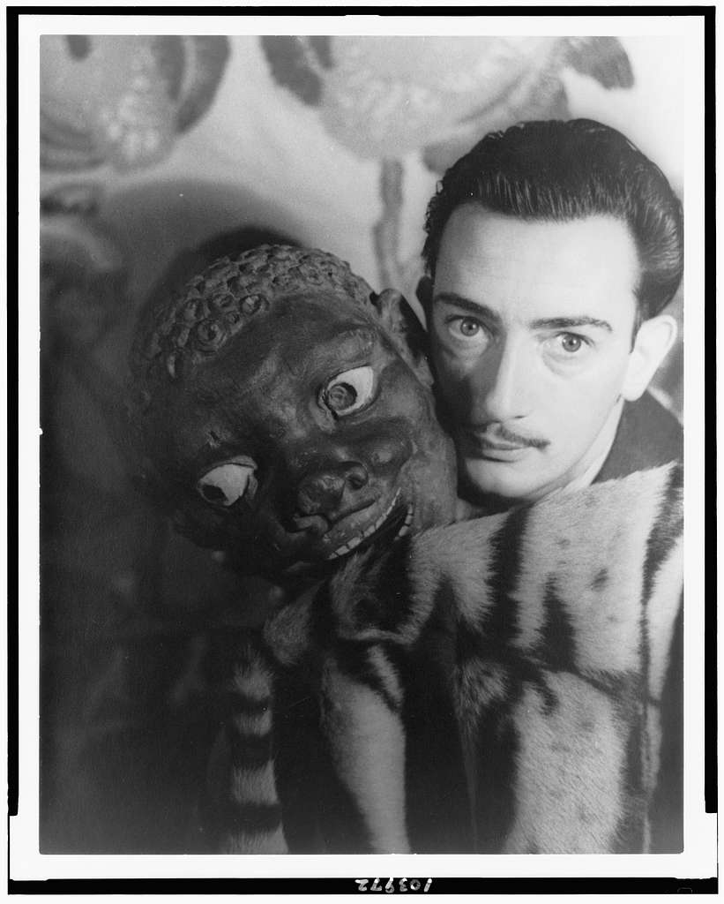
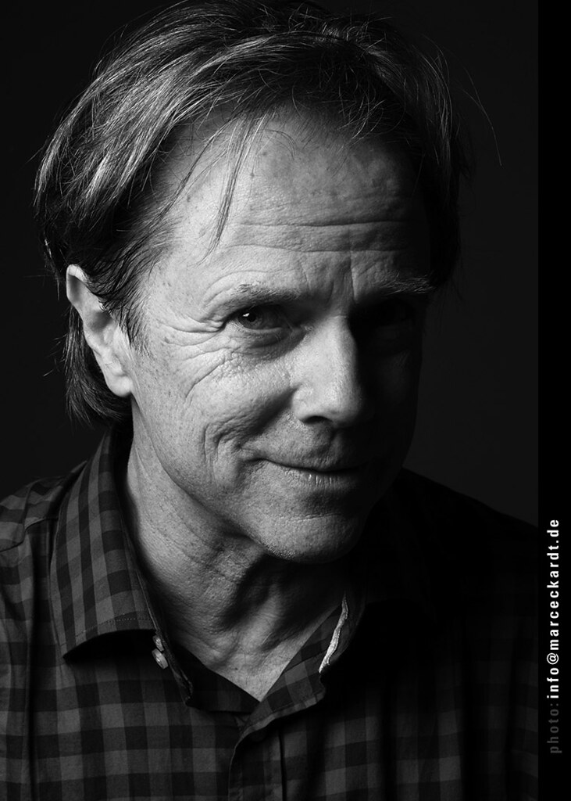
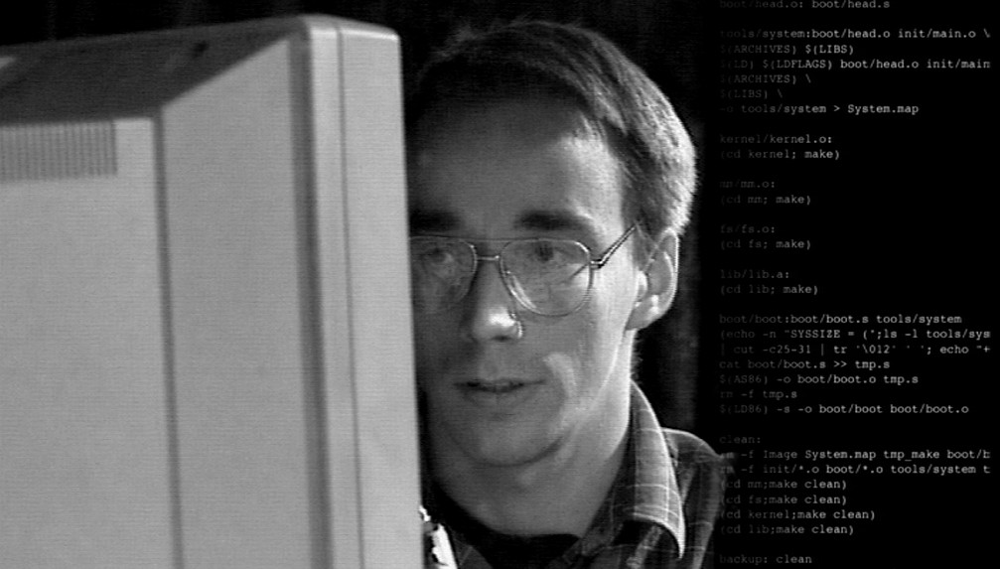
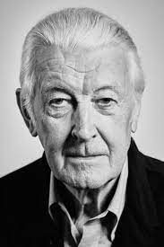

Art/Artists
Salvador Dalí
Salvador Dalí, in full Salvador Felipe Jacinto Dalí y Domenech, (born May 11, 1904, Figueras, Spain—died January 23, 1989, Figueras), Spanish Surrealist painter and printmaker, influential for his explorations of subconscious imagery.
Frida Kahlo
Jean-Michel Basquiat
Design/Designers
David Carson
David Carson is a man who has transformed the field of graphic design throughout his career. Self-taught, resolutely grid-free, and unafraid to speak his mind (he’s also very funny), Carson’s work made designers realise that editorial layouts didn’t have to stick to the rules around image placement, consistent typography, or doggedly flowing copy issue after issue.
Engineering/Engineers
Linus Torvalds
Linus Torvalds created the Linux kernel and oversees open source development of the widely-used Linux operating system. Torvalds was born on 28 December 1969 in Helsinki, Finland. He enrolled at the University of Helsinki in 1988, graduating with a master’s degree in computer science. His M.Sc. thesis was titled Linux: A Portable Operating System.
Time Berners-Lee
Håkon Wium Lie
Typography/Typographers
Matthew Carter
Matthew Carter is arguably the world’s most widely read designer. If you don’t recognise his name—you’ll recognise his work, and have probably come across it in your day-to-day without ever realising … Starting his career as a punch cutter apprentice at 19, Matthew Carter has been in the business of type for over six decades. He is one of the few typographers that have bridged all three major technologies used in type design: physical typesetting (wood and metal), phototypesetting and digital font design.
Neville Brody
Jan Tschichold